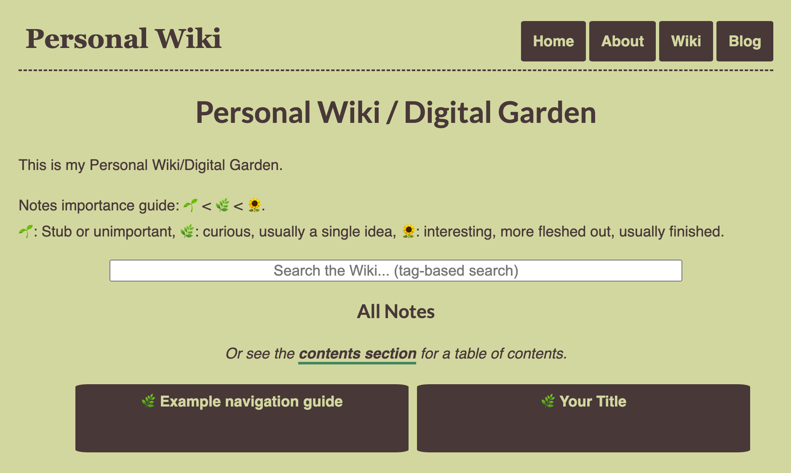

I have been using a personal wiki for note-taking and studying for 2 years. In that time, it has helped me a lot when preparing exams or job interviews, and generally made studying from books or papers feel more productive and enjoyable.
A part of that is just emotional: it feels good to take notes and capture what you learn, knowing you will be able to find it again later. Being more deliberate about what you will remember in the long term, and what resources you have close to hand when writing an essay or programming, frees up a lot of cognitive load from day-to-day studying or processing, and lets you focus on the tasks themselves.
Reviewing a whole topic from a set of notes instead of having to reopen an old book (or books, plural) is also a liberating feature.
After I wrote my previous article on how I use my Personal Wiki for studying and what advantages it has afforded me, a few people told me it had made them curious about trying one out for themselves.
I am going out on a limb here and assuming some of my online readers also felt that way, so I am writing this guide for you.
Want to try your hands at a personal wiki but don’t know how to start? Follow along.
You can read this on your mobile phone and come back later if you want to try it out for yourself, but I think the most fun way of consuming this article will be from a computer, following along step by step and in the end having your very own personal site and wiki.
In this post, I will show you
- How to fork my personal site / wiki template, to create your own.
- How to customize it so it fits your own profile.
- How you can start capturing insights and facts from the content you consume, editing them and linking them so you end up with your own garden of networked thought.
The project you end up with will be a personal site in its own right, which you can host for free on Github Pages if you are so inclined. Then you can even use your wiki as a way to showcase your skills and a part of what you’ve learned and read to future employers. Plus it’s a great sign of status, and I’m sure it will woo your potential significant others [citation needed].
Before we start, you will need: a Github account, 20 minutes (I estimate, but tell me how long it took for you.) and a text editor.
What we are about to do is: fork a personal wiki template repository, using jekyll to make a static site where each wiki article is a page, and host it on Github pages. Don’t worry if that didn’t make sense, you’ll understand by the end.
Step 1: Forking the Github Project
I built a template for a personal site with a Digital Garden by stripping away all the content from this site and changing the design.
You can fork it in Github, which allows you to basically copy paste all of my code and then edit on top of it. You are free to edit away any part of it or just leave it all as-is and start using the wiki right away.
To fork, simply go to the project’s URL and click on fork if you have a GitHub account, or create one first. This will create your own copy of the project from which you can begin working.
To edit your own copy go to its URL (you can also find it in your profile) and clone the project to your computer. Alternatively you could edit each file from the browser directly through Github’s UI, though you will probably be less happy doing it that way.
This is what it will look like in the beginning:

It’s a stripped out version of this same website, except I changed the palette to something greener (because it’s supposed to be a garden, get it?). I made it responsive so it looks well on mobile.
All of the style and design is packed into a file called css/main.css, which you are free to edit and customize as you prefer, until it suits your aesthetic sensibilities. Right now it has a simple design, but you can do whatever you want to it like changing the font or color palette, background design, etc.
Here is some inspiration for web design templates, and color palettes.
Step 2: Making the Site Your Own
There are a few parts of this template you will need to edit to add in your personal touch.
In order, these are:
index.htmlandabout/index.md, which contain the Homepage and About page respectively. In index.html you could write in a little bit about you in the profile, and replace Username with your handle. The About page is typically where you will make a more detailed text about who you are, what you are working on, etc. Adding more sections to the site is as easy as adding more folders with anindex.mdfile, which you can just copy fromabout/index.md.- The file
_config.ymlhas a few configuration fields: one for your twitter username and another for your google analytics ID if you want to use GA to count your site’s visitors. If you don’t want to use Google Analytics, leave it blank. - This is probably the most involved step. Go to
_layouts/default.html. The footer has a few links to social media with their corresponding FontAwesome icons. You can either replace mine with yours, like putting in your own LinkedIn etc., or delete the line to remove that link from your site. You can obviously add whatever other social media you use, or links to other sites you have, etc. On that same file, in the header, you could also add links to any new sections you create down the line, like a Now page or a link to a portfolio with images.
Finally in that footer is a little credit to the template’s humble creator, me. There is nothing stopping you from deleting that, but it would make me smile if you leave it there, especially if I am one day browsing someone’s site and see it in the credits.
Also, if you make this site public and ever share it on Twitter, whatever image you put on resources/placeholder.png will be your link’s image on twitter, but each individual markdown has a twitter_image property that overrides that path with any URL you write into it.
Step 3: Using the Wiki
Now this is where it gets fun.
Under the wiki folder, you will find a default, template article. You’ll notice it is on markdown, an extension of plaintext that will let you format files nicely without having to learn how to code. You can do headings, subheadings, lists and links quite easily, and this example file has a little bit of each piece of syntax so you don’t have to learn from scratch. You can visit this Markdown guide to learn more about the syntax, but there isn’t that much more you are going to need.
Whenever you want to add a new article to your wiki, all you have to do is create a new .md file in that folder, and give it a title and description like in the example file (between ‘—’s). You can also add tags, separated by commas, which allow for searching (in the wiki’s searchbox, or using a link to /tagged/?q=keyword) and an abstract that will appear in the beginning of the article in a different colored box.
The importance and date fields serve mostly as metadata: the former ranks articles in the /wiki base page, the latter just lets you know when you created an article first.
If you want examples of how to use a wiki in general, I will direct you to my previous article on my note-taking workflow and Digital Gardens, or my wiki article on note-taking, but a short summary would be: when you come up with an idea that you like, or read something that surprises you or you think you will want to use or review later, add it to your wiki. Ideally use your own words, but there is no shame in copying and pasting (though future-you will probably be happier if you link or cite your source). Finally, link the article to other articles in your wiki that you think will be relevant or related, so in future traversals you will see how it fits in the bigger picture (this step is optional and each person manages it in their own way).
To read more about this, consider perusing all the resources I cite at the bottom of my previous links. There is a whole philosophy to planting notes in a digital garden, along with the idea of maintaining them so they are ‘evergreen’ (as opposed to a blog post which is often a temporary thing that loses relevance over time).
Additionally, this personal site comes with support for a blog, in case you want to start writing one. Again each post will be a markdown file, with the only condition that their filenames should start with the date you wrote them in. If you are on the fence about starting a blog, you should try it, it can be fun.
Many people have written about why you should start blogging. I don’t particularly endorse the idea that everyone should blog, but I do think everyone should try it for a while. If you like it and it helps you, keep at it. If you feel you are wasting your time, quit it and nobody will be harmed.
Step 4: Optionally, Host it on Github Pages.
If you want to make your wiki public, you can host it for free in many places like Github Pages or Netlify. I think Github has the friendliest workflow for this, but they are both free providers and you can customize the subdomain in either of them, so I don’t have a big preference for one of them. You can also buy your own domain and host it there, if you want to and can afford it.
Here is a tutorial on how to host a jekyll site like this on github pages, though the whole process is quite intuitive.
Additionally, if you do decide to host your wiki online, please let me know. You can send me the link on HackerNews, reddit or twitter, or do a Pull Request, and I will link to it in the project’s README so other people can see how many beautiful personal wikis were added to the internet.
Actually this whole thing is my evil plan because I like browsing personal wikis in my free time and I want to add new ones to the web so that I can keep finding new places to procrastinate in.
Conclusions
I think many people can benefit from having their own place in the web, and their own system for note taking. Being able to take notes in public and link them, leveraging the web’s capability for connecting thoughts, can make you a more effective writer and, indirectly, thinker.
More directly, it has helped me a lot with studying and it may do the same for you. So if you were on the fence on creating a Digital Garden or personal wiki and didn’t know where to start, I hope this tutorial will have given you the push you needed.
If there are any steps that are unclear to you or you couldn’t make the site or hosting work, don’t be afraid to reach out to me. I may be a bit slow to respond, but I will eventually help you if I can.
And if you found this post entertaining or useful, share it on Twitter. Let’s pave the web with wikis everywhere.
Follow me on Twitter to know when I write a new article.
Further Reading
- TiddlyWiki Beginner Tutorial: If you don’t want to have a whole personal website and don’t feel that the level of customization afforded by a static website beats the ease of using a tool, I recommend you try TiddlyWiki instead. It is pretty plug and play and will give you most of the basic features you want for a personal wiki. As inspiration, this is one Digital Garden made with TiddlyWiki that I find fascinating.
- SadGrl’s Layout Directory is a great resource to get new HTML templates if you want to change the layout of some of the pages (or add new ones) after forking. These designs are great, and they have that old web, indie feel I like so much, like you would see in a blogspot from 2008.